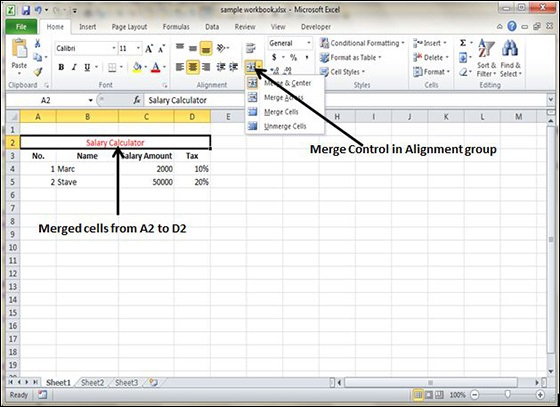
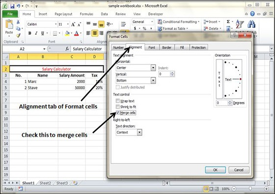
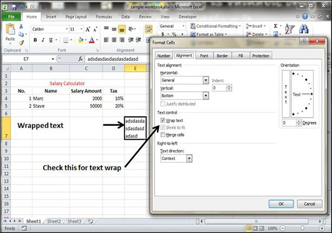

MS Excel enables you to merge two or more cells. When you merge cells, you don’t combine the contents of the cells. Rather, you combine a group of cells into a single cell that occupies the same space.
You can merge cells by various ways as mentioned below.
Choose Merge & Center control on the Ribbon, which is simpler. To merge cells, select the cells that you want to merge and then click the Merge & Center button.

Choose Alignment tab of the Format Cells dialogue box to merge the cells.

The Home » Alignment group » Merge & Center control contains a drop-down list with these additional options −
Merge Across − When a multi-row range is selected, this command creates multiple merged cells — one for each row.
Merge Cells − Merges the selected cells without applying the Center attribute.
Unmerge Cells − Unmerges the selected cells.
If the text is too wide to fit the column width but don’t want that text to spill over into adjacent cells, you can use either the Wrap Text option or the Shrink to Fit option to accommodate that text.
